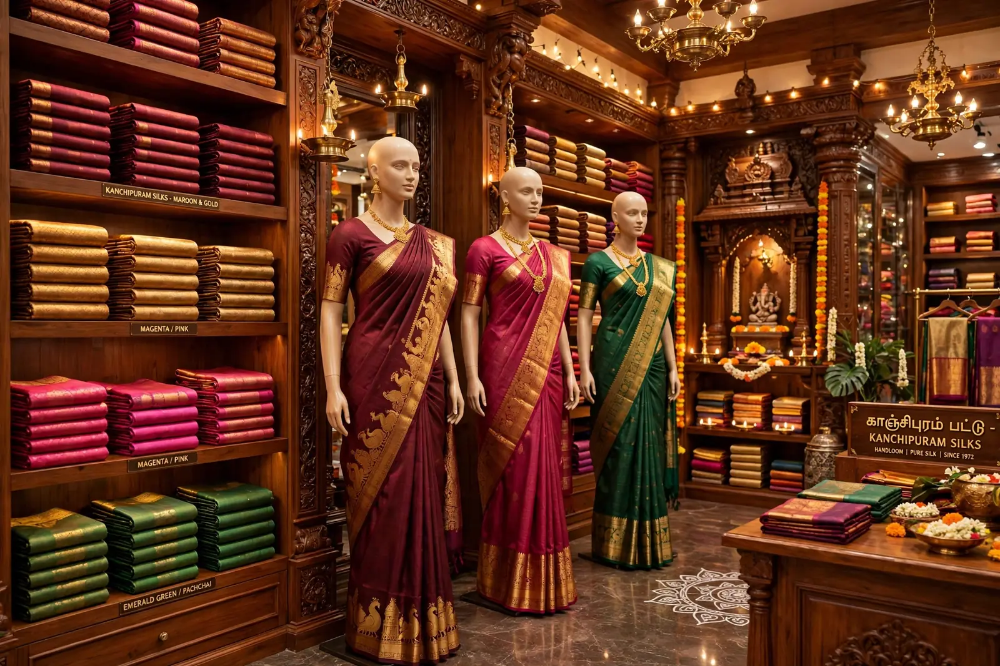
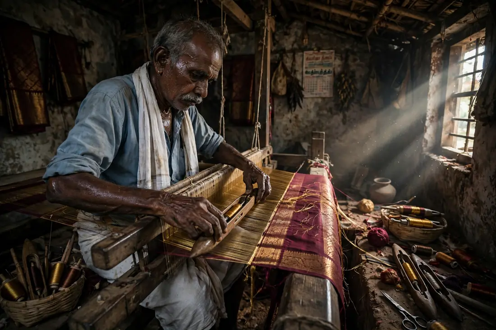
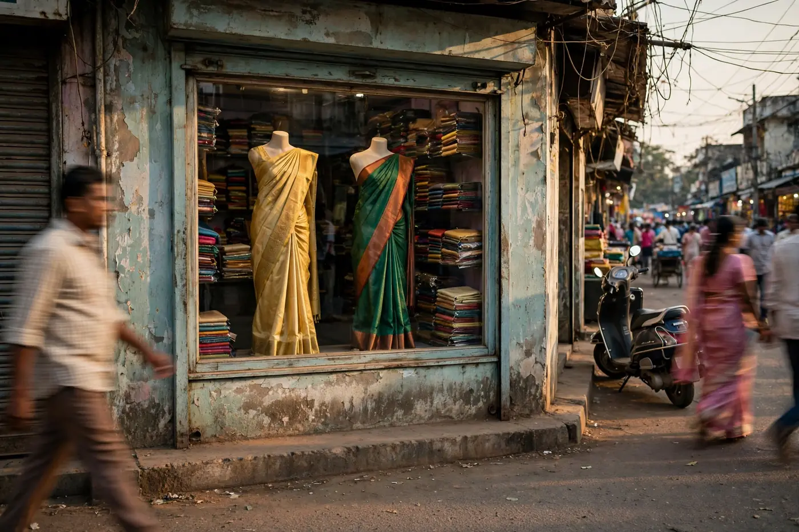
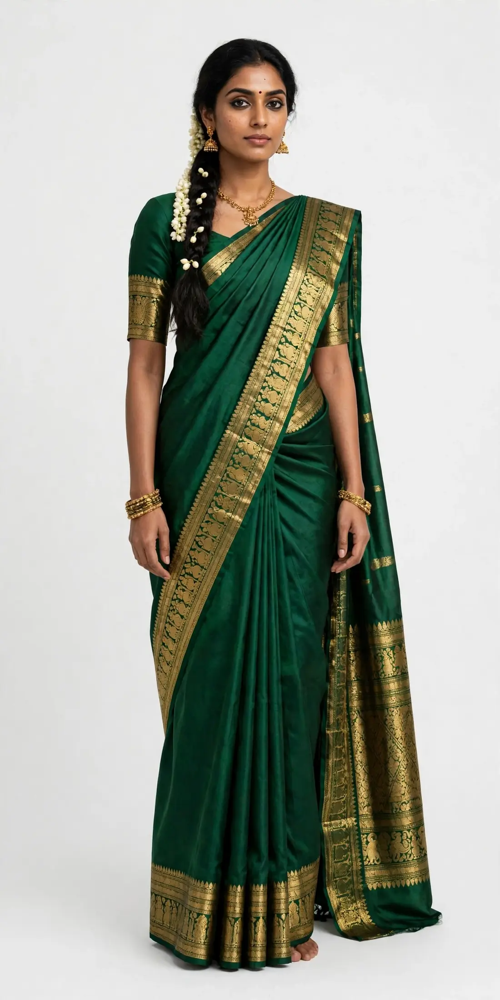

— THE MUSE FILM
Feel the drape


NOOLAM brings the temple looms of Kanchipuram home: Kanjivaram silk in heritage colours, bordered in real zari and finished by hand.
Woven by hand, worn for a lifetime. Six silk stories, from quiet mornings to festive evenings.
Eight looks, styled head to toe. Tap a look to see the pieces.
Tilt a card, press it, poke the silk. Hit + to drop a saree into your bag.
Handwoven in Kanchipuram, one saree at a time. Pure zari, temple border, finished by hand.
Five drapes filmed the way they are lived in — lamp rooms, temple lanes, a morning by the sea. Tap the centre reel to watch it full screen, with sound.
Pattu · Red-gold pallu

Every NOOLAM saree starts as mulberry silk thread and a pit loom in a weaver's home — not a factory floor. The korvai border is joined by hand, the zari is tested silver at its core, and a single bridal pattu can hold a family of weavers for the better part of a week.
We buy from the same forty-odd weaving families we started with, pay on the day a saree leaves the loom, and put the weaver's village on the tag of every piece. If a border is imperfect, it stays — that is how you know a hand made it.
"Bought my daughter's muhurtham pattu here the same week my mother bought hers, thirty years apart. The zari has not dulled one bit — mine still comes out for every Pongal."
"I ordered from Chennai after a video call with the store — they opened saree after saree on camera until I found the right korvai. It arrived in three days, blouse stitched."
"The checks are perfectly imperfect, if that makes sense. You can feel the loom in it. Three weddings this season and someone asked about the saree at every single one."
Yes. Our borders use tested zari — a silver core wrapped in gold — which is why a NOOLAM border carries weight and does not blacken the way imitation zari does. Every bridal piece ships with its zari and silk purity noted on the tag.
Two to four working days across India, packed in a cotton bag inside a rigid box. Blouse stitching, when you add it, takes two extra days. Kanchipuram and Chennai orders placed before noon usually arrive the next day.
Yes — message us and we will open the exact piece on a video call, drape it, and show the border and fall in daylight. Most of our online orders start exactly that way.
Shot silk genuinely changes with light — that is its nature, not a defect. If the saree is simply not right, return it unworn within seven days and we will exchange it or refund you in full.
Dry clean only, store wrapped in the cotton bag we send — never plastic — and refold along different lines every few months so the zari does not crease-set. Keep it away from perfume sprays and direct sun.

14, Gandhi Road, Kanchipuram,
Tamil Nadu 631502
Open every day
Mon–Sat · 9:30 am – 9:00 pm
Sunday · 10:00 am – 2:00 pm
Talk to the store
+91 98410 00000
care@noolam.example
Bridal appointments run about an hour — we keep the full bridal rail aside for you and the coffee is on us. Walk-ins are always welcome for everything else.
Browse before you visit →